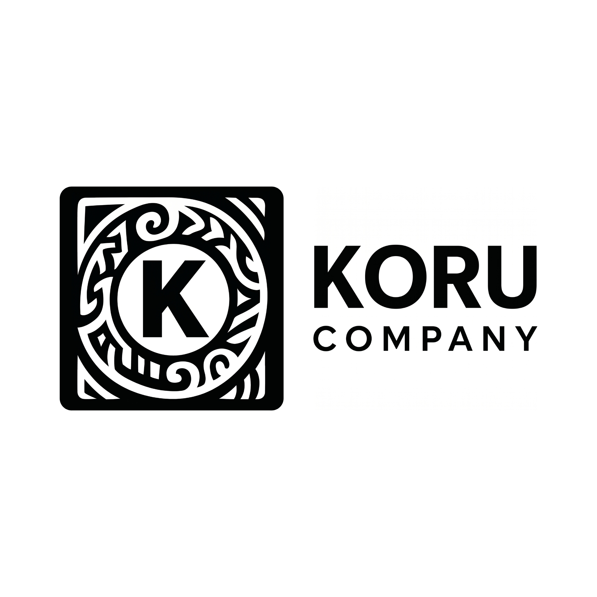

Software house consultiva em Indaiatuba - SP, com atendimento remoto no Brasil
Tecnologia sob medida para empresas que querem operar melhor.
Desenvolvemos sistemas, automações e dashboards a partir de um diagnóstico real da sua operação, reduzindo retrabalho, centralizando informações e apoiando decisões com dados.
- Menos retrabalho
- Processos mais claros
- Decisões com dados reais
Quando ajudamos
Para empresas que precisam organizar a operação antes de escalar.
A Koru atende pequenas e médias empresas, clínicas, escritórios e prestadores de serviços que dependem de planilhas, WhatsApp, controles manuais, informações espalhadas ou sistemas improvisados para processos importantes.
Planilhas demais
Controles críticos sem fluxo, histórico ou dono claro.
Retrabalho constante
Tarefas repetitivas consumindo tempo e aumentando erros.
Dados sem decisão
Informação existe, mas não vira indicador confiável.
Presença digital fraca
Site ou plataforma não transmite a qualidade real do negócio.
Metodologia
Nossa diferença está antes do código.
Antes de desenvolver qualquer solução, a Koru entende a rotina, os gargalos, os usuários, os fluxos e as decisões da empresa. Essa análise reduz retrabalho, evita sistemas genéricos e aumenta a aderência da solução à realidade do negócio.
-
01
Diagnóstico inicial
Entendimento do cenário, objetivos, restrições e prioridades.
-
02
Mapeamento da operação
Leitura dos fluxos, usuários, entradas, saídas e pontos de decisão.
-
03
Identificação de gargalos
Análise de retrabalho, falhas de comunicação e informações descentralizadas.
-
04
Priorização da solução
Definição do que deve ser resolvido primeiro para reduzir risco e gerar valor.
-
05
Desenvolvimento
Construção da solução sob medida com validações durante o processo.
-
06
Implantação e evolução
Acompanhamento, ajustes e melhorias conforme o uso real da operação.
Atendimento consultivo
Quer ver esse método aplicado ao seu negócio?
Converse com a Koru e entenda quais etapas fazem sentido para organizar sua operação com menos risco.
Soluções
Soluções digitais com foco em resultado operacional.
Serviços para organizar processos, automatizar rotinas, centralizar informações e transformar dados em decisões práticas.
Sistemas sob medida
Aplicações web, portais e sistemas internos alinhados aos fluxos da empresa.
Resultado esperado: processos centralizados, rastreáveis e menos dependentes de controles paralelos.
Falar sobre sistemaAutomação de processos
Fluxos e integrações para reduzir tarefas repetitivas e padronizar rotinas.
Resultado esperado: menos retrabalho, mais consistência e ganho de tempo operacional.
Mapear automações agoraDashboards e dados
Painéis, indicadores e rotinas de dados para leitura executiva e operacional.
Resultado esperado: informações centralizadas e decisões apoiadas por dados confiáveis.
Solicitar análise de dadosConsultoria técnica e operacional
Diagnóstico, priorização e orientação para evoluir tecnologia com clareza.
Resultado esperado: plano de ação viável, organizado por impacto, risco e prioridade.
Falar com um consultorSites e presença digital corporativa
Sites institucionais e plataformas digitais para empresas que precisam se apresentar melhor.
Resultado esperado: presença profissional, mensagem clara e base preparada para crescer.
Quero melhorar minha presençaArraste para ver mais soluções
Equipe pronta para atender
Não sabe qual solução escolher?
Fale com a Koru agora e receba uma orientação inicial para priorizar o que gera mais impacto.

Institucional
Uma empresa enxuta, organizada e preparada para crescer.
A Koru Company nasce com uma operação estratégica, sustentável e orientada por processos. Mesmo em fase inicial, atua com documentação, planejamento técnico, comunicação clara e acompanhamento contínuo para entregar soluções confiáveis.
- MissãoDesenvolver soluções tecnológicas com responsabilidade, proximidade e visão estratégica.
- VisãoSer referência em soluções digitais personalizadas para empresas que buscam crescimento sustentável.
- ValoresÉtica, transparência, cooperação, inovação responsável e melhoria contínua.
Para quem é
Empresas que querem operar com mais clareza.
- Empresas de serviços em crescimento
- Clínicas, escritórios e operações administrativas
- Negócios com processos manuais ou descentralizados
- Empresas que precisam de software sob medida, automação ou dashboards
Para quem não é
Projetos sem espaço para análise tendem a gerar retrabalho.
- Quem procura apenas o menor preço
- Quem quer desenvolver sem planejamento
- Quem busca uma solução genérica sem análise da operação
Diagnóstico inicial
Pronto para entender onde sua operação pode melhorar?
Agende um diagnóstico inicial e descubra quais processos podem ser organizados, automatizados ou transformados em uma solução digital sob medida.